Fracture Management
- Five steps: resuscitate (bones bleed), reduce, hold the reduction (internal fixation, external fixator, or cast/splint), re-x-ray, then rehab with early movement.
- Closed reduction: analgesia and sedation, longitudinal traction that exaggerates the deformity, then reverse it while keeping traction, a well-moulded cast, and post-reduction films.
- Any wound near a fracture = open until proven otherwise. In the ED: IV antibiotics (e.g. cefazolin 2 g), tetanus, splint. In the OR: debride, irrigate with saline, stabilize, close.
- Compartment syndrome is clinical: pain out of proportion and pain on passive stretch. Paresthesia is mid, paralysis late, and lost pulses mean you've missed it. Call ortho, remove the cast, elevate; the fix is fasciotomy.
- Healing: the line widens at 10–14 days (normal resorption), callus shows from about 2 weeks. Upper limb unites in 3–10 weeks, lower limb in 6–12.
- AVN hits bones with a retrograde blood supply: femoral head, scaphoid, talus. Post-traumatic arthritis follows over half of ankle fractures. Heterotopic ossification is invisible on x-ray early (use a bone scan) and is only excised once mature.
Learning Objectives
- Describe the basic principles of fracture management.
- Describe the unique principles of managing open fractures and their potential complications.
- Describe significant complications of fractures and fracture care: VTE, compartment syndrome, nonunion and malunion, AVN, heterotopic ossification and post-traumatic arthritis.
Three recordings (44 min): management and complications by Dr. Caitlin Cassidy (content from Drs. C. Del Balso and V. Kalia), and fracture healing by Dr. Vishal Kalia, which finishes his 10.4 Fracture Radiology talk. The deck warns of graphic surgical photos; they're left out here.
Managing a Fracture
The goals, the five steps, and what's different about open fractures.
Goals and the Five Steps
Management aims to restore anatomy (length, alignment, rotation, translation), allow early motion (avoiding the complications of immobility), avoid complications of poor healing and improve function.
ABCs first. Bones bleed, and sharp bone ends can injure vessels.
Get the bone ends roughly back in line (not needed if non-displaced). Open = in the OR, under anaesthesia, seeing the fracture. Closed = without seeing the fragments, often in the ED.
Internal fixation (plates, screws, pins, nails; ORIF = open reduction, internal fixation), an external fixator, or a cast or splint.
Check that the reduction is adequate (ortho has criteria you don't need to know) and that it's being held.
As much movement as is safe, as soon as possible. Protect weight bearing as ortho directs. PT and OT for mobility and daily tasks. Prevent contractures.
| Closed reduction, step by step | Why |
|---|---|
| Analgesia and sedation | A tense patient splints the fracture with their muscles, and it won't reduce |
| Longitudinal traction, exaggerating the deformity | Unlocks overlapping or impacted fragments: “make it worse before you make it better” (finger traps for a wrist) |
| Reverse the deformity while keeping traction | Pressure on the right sides pushes the fragments back into line |
| Immobilize in a well-moulded cast | Moulding while the cast dries improves and holds the reduction |
| Post-reduction x-rays | Confirm the reduction and that it's maintained |
Open or closed? It depends on the fracture's type and location, how displaced it is, whether it's open, and whether the patient is stable enough for surgery (including other, more life-threatening injuries). An external fixator suits a patient who needs the fracture held but can't have a cast (swelling, skin) or isn't a good surgical candidate.
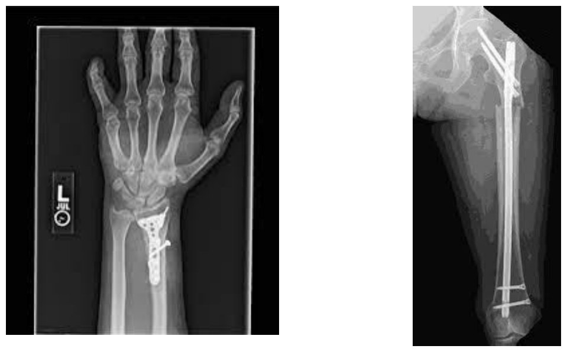
Internal fixation: a plate on a distal radius; an intramedullary (IM) nail in a femur. From the deck.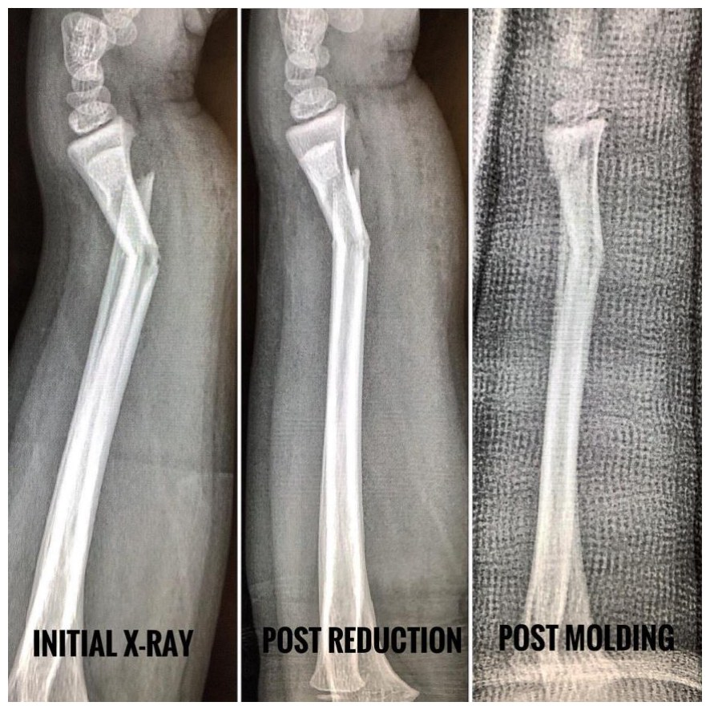
Initial, post-reduction, post-moulding: alignment improves at each step. From the deck.Open Fractures
An open fracture is one where the bone or its hematoma is exposed to the outside through traumatic violation of skin and soft tissue (NIH). Any fracture with a wound, even one some distance away, is open until proven otherwise: even a tiny wound over an ankle fracture can connect to it. Open fractures have more complications (infection above all, plus nonunion and delayed union) and more incomplete recovery. Higher-energy injuries mean more tissue damage, contamination and devitalized bone.
The goal: turn an unstable, contaminated wound into a stable, clean environment that can heal.
| In the ED (right away) | In the OR (early surgery) |
|---|---|
| Early IV antibiotics | Debride: remove all devitalized tissue, including bone fragments |
| Tetanus prophylaxis (update or booster) | Irrigate gently with sterile saline |
| Stabilize as well as you can while you wait for ortho (closed reduction and splint) | Stabilize definitively with whatever suits the fracture (an external fixator if contamination is heavy) |
| Close the soft-tissue envelope early: direct closure at the ORIF if possible, otherwise a plastic surgery flap, sometimes delayed |
The module's case: an open tibia
A 34-year-old jumps from a moving car; bone shows through a large anterior wound on the leg. Film: open, spiral fracture of the distal third of the tibial diaphysis, mildly displaced: shortened, posterior translation of the distal fragment, apex-lateral angulation (see 10.4). ED: cefazolin 2 g IV, tetanus, reduce and splint. OR: debridement, saline irrigation, an intramedullary nail, and, with little contamination and little tissue removed, direct closure at the same operation.
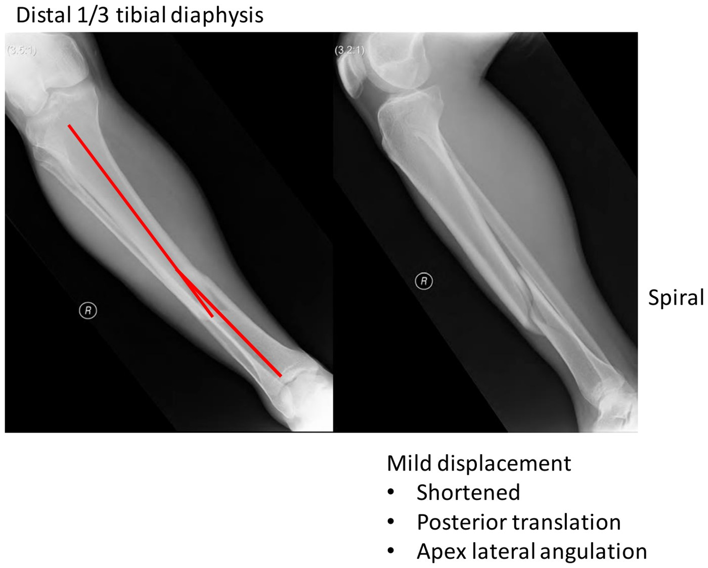
The case's films: spiral distal-third tibial fracture. From the deck; the wound photo is left out.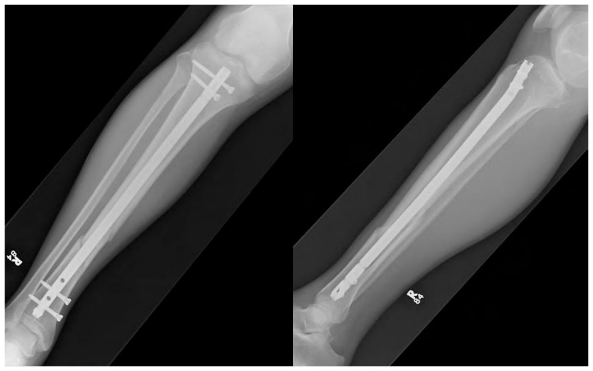
After surgery: a locked IM nail. From the deck.Fracture Healing
Dr. Kalia: the two kinds of healing, the stages, and the timelines.
How Fractures Heal
| Primary (contact) healing | Secondary (spontaneous) healing | |
|---|---|---|
| When | Bone surfaces held directly apposed: rigid internal fixation | Everything else, including casts. Most fractures. |
| On x-ray | No callus; alignment unchanged | Callus forms through the stages below |
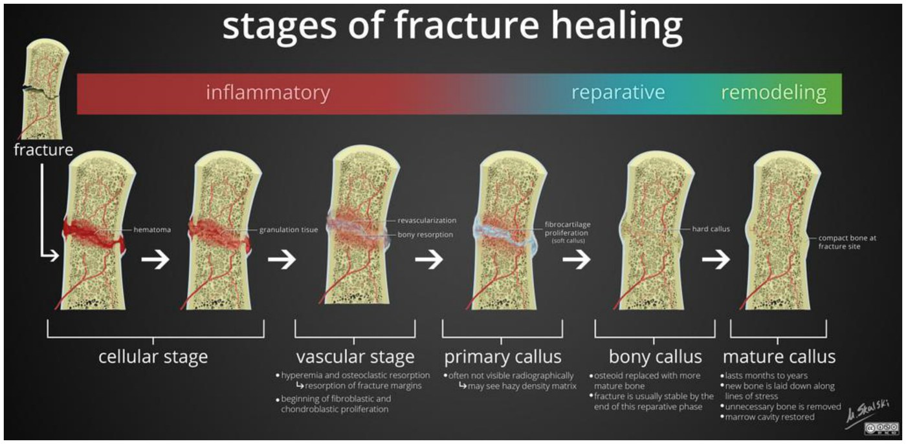
| Stage | What happens | What the x-ray shows |
|---|---|---|
| Cellular | Hematoma draws in macrophages; granulation tissue forms | The fracture line |
| Vascular | Revascularization and bone resorption at the fracture ends | The line widens (10–14 days). That's healing, not a worse fracture. |
| Primary callus | Fibrocartilage bridges the gap | Not yet visible (uncalcified) |
| Bony callus | Osteoblasts make hard callus: periosteal callus bridges around the outside, endosteal callus across the middle | Visible callus from about 2 (2–3) weeks |
| Mature callus | Remodeling into compact bone | Radiological union: mature bridging callus, cortex and medullary cavity re-established |
Healing is a clinical diagnosis: no tenderness, no movement at the fracture site, and the patient can bear weight.
| Region | Time to union | Slowest |
|---|---|---|
| Upper limb | 3–10 weeks (e.g. a simple fracture 3–6, proximal humerus 4–8) | Distal humerus, 8–10 weeks |
| Lower limb | 6–12 weeks (weight bearing slows it) | Femoral neck and shaft |
Knowledge check: the wider line at day 7
A closed, casted distal radius fracture looks slightly wider on the 7-day film, with no new angulation or translation and no new pain. That's early fracture healing (resorption at the fracture ends). It's too early to call nonunion, infection is unlikely in a well patient with a closed fracture, and the unchanged alignment means the reduction has held.
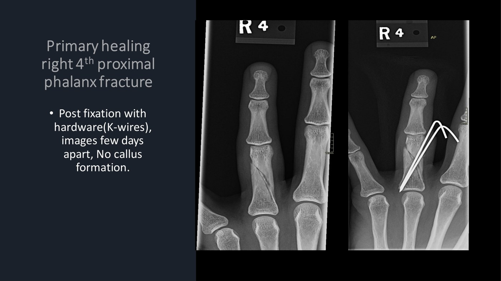
Primary healing: K-wired phalanx, no callus. From the deck.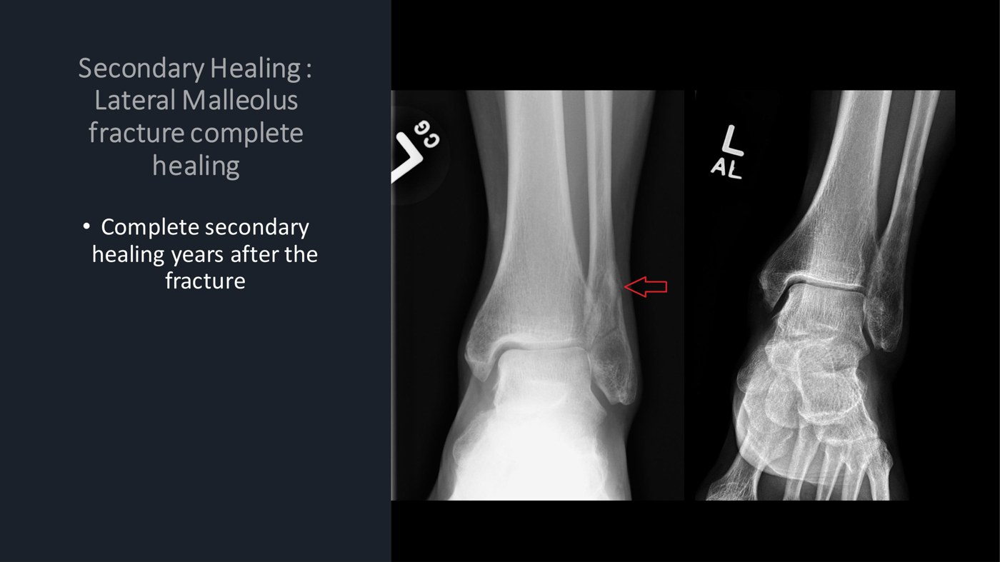
Secondary healing: a lateral malleolus fracture, then fully remodeled years later. From the deck.Complications
VTE, compartment syndrome, nonunion and malunion, AVN, post-traumatic arthritis and heterotopic ossification.
Thromboembolic Disease
Most orthopaedic trauma patients have all of Virchow's triad: endothelial injury, stasis, hypercoagulability.
| Extra risk factors | Prevention |
|---|---|
| Multiple injuries; spinal cord or head injury; lower-limb or pelvic fracture; older age; prolonged surgery or a long wait for surgery | Mechanical: intermittent pneumatic compression; an IVC filter stops emboli reaching the lungs but does not prevent clots. Chemical: ASA or LMWH, the two most used in trauma. Choose for the patient: with an intracranial bleed, lean on mechanical methods. |
Compartment Syndrome
Pressure inside a closed fascio-osseous space rises past what its contents can tolerate. After a tibial fracture, blood and swelling fill a compartment whose fascia can't stretch far, until blood can't flow in or out. The most metabolically active tissues, muscle and nerve, suffer first: injury begins within about 2 hours of ischemia. Cell death brings inflammation and leaky capillaries, which pour in more fluid and raise the pressure further: a vicious cycle. It's most common in the leg and forearm.
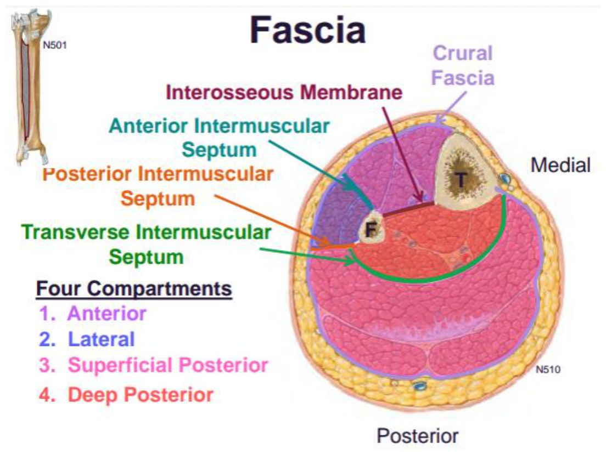
| Causes | Examples |
|---|---|
| External | A cast too tight for the swelling; direct pressure (lying on the limb); circumferential burn eschar, which acts like a cast |
| Internal | Hematoma; fluid leak (extensive burns, after reperfusion of a vascular injury); crush injury |
| Sign | When |
|---|---|
| Pain out of proportion to the injury (“POOP”): escalating opioid needs, pain uncontrolled even after fixation | Early: the key sign |
| Pain on passive stretch of the compartment's muscles | Early: the key sign |
| Paresthesia | Mid |
| Paralysis | Very late, often irreversible |
| Pulselessness | Not typical. Pulses are usually still there late; if they're gone, “you've 100% missed the boat”. |
Passive stretch lengthens the muscles on the other side of the joint. Passive plantarflexion stretches the anterior compartment (the dorsiflexors); passive dorsiflexion stretches the posterior compartments. In the forearm, passive wrist and finger extension stretches the anterior (flexor) compartment. Dr. Cassidy points out that the slide has the leg pair backwards.
- It's a clinical diagnosis. If the picture fits, no test is needed: urgent call to ortho, because it's limb-threatening.
- Measure pressures only when the patient can't tell you: uncooperative, obtunded or sedated, or a young child. The lecture's cut-offs: diastolic BP minus compartment pressure < 20 mmHg, or an absolute pressure > 30 mmHg.
- While you wait: call ortho, remove casts and tight dressings, elevate, cool the limb (lowers its metabolic demand), monitor closely.
- Definitive: fasciotomy (open the fascia), with delayed closure.
Nonunion and Malunion
| Term | Definition |
|---|---|
| Delayed union | Healing takes about twice as long as expected (Dr. Kalia) |
| Nonunion | No healing in twice the expected time (Dr. Cassidy), or in 6–9 months (Dr. Kalia). You often need the history (“this was two years ago”) to call it. |
| Malunion | Healed, but in an abnormal position or alignment |
| Nonunion type | Looks like | Points to |
|---|---|---|
| Atrophic | No significant bone formation; the fracture lines still clear years later | Impaired biology: nutrition, metabolic problems, smoking |
| Hypertrophic | Lots of bone, but none bridging the gap | Not enough stability |
| Infected | Infection |
Managing nonunion: improve stabilization (especially if hypertrophic); biologic activation (fix nutrition and metabolic problems, stop smoking, bone graft to bring in living bone); eradicate infection (irrigation, debridement, antibiotics); then surgical reconstruction.
Managing malunion: assess the deformity in every plane (shortened, angulated, rotated, translated?), then the patient: is it hurting comfort or function, now or later? If so, an osteotomy (cut the bone, remove some if needed, realign and fix it).
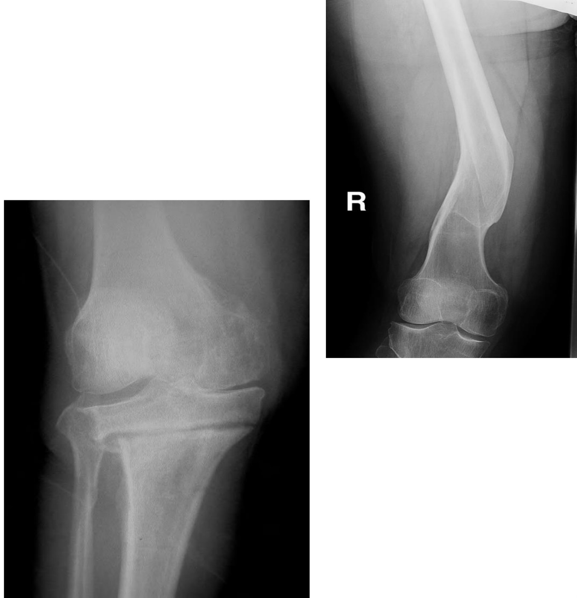
Nonunion (two years on) and malunion. From the deck.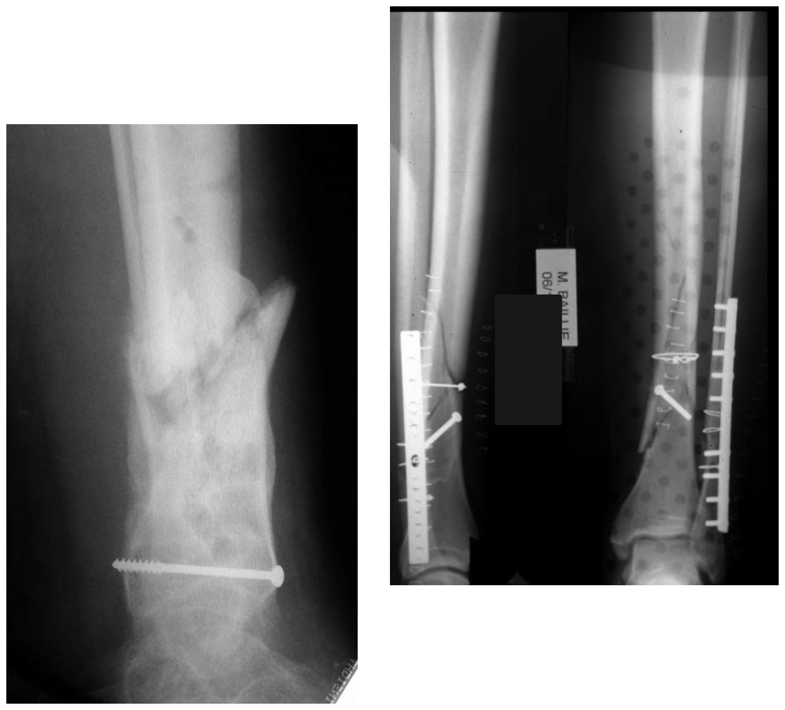
Atrophic (no new bone) vs hypertrophic (bone everywhere, no bridge). From the deck.AVN, Post-Traumatic Arthritis and Heterotopic Ossification
| Complication | Key facts |
|---|---|
| Avascular necrosis (osteonecrosis) | Bone death from lost blood supply, most common where supply is already poor: the femoral head, scaphoid and talus, which all have a retrograde blood supply. Presents with pain; visible on x-ray once enough bone is lost. Management is surgical. (Talar body AVN follows a talar neck fracture.) |
| Post-traumatic arthritis | OA after a peri-articular fracture. Uncommon after hip and knee fractures but very common after ankle fractures (>50%). Pain, especially weight bearing, and stiffness; the x-ray looks like OA. Manage like OA: analgesia, PT, then surgery if all else fails. |
| Heterotopic ossification | Bone forming where it shouldn't (e.g. in muscle). Risk factors: polytrauma (around fracture sites), head injury, burns over 30% TBSA. Joints at risk: hip, knee, elbow. Causes stiffness, up to ankylosis; early on, redness, swelling and tenderness. X-ray and CT are negative early (not yet calcified); a bone scan picks it up. Control pain and inflammation; excise only once mature, or it grows back. |
Knowledge check: the 64-year-old's ankle
Five years of activity-related ankle pain, relieved by rest, mild end-of-day swelling; the films show arthritis. The answer is post-traumatic arthritis: she had an ankle fracture treated without surgery 40 years ago. Primary OA is common in the hip and knee but uncommon in the ankle, and the films show no heterotopic bone or talar AVN.
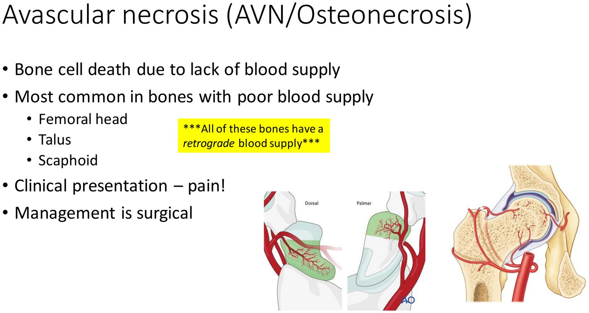
AVN: femoral head, talus, scaphoid. From the deck.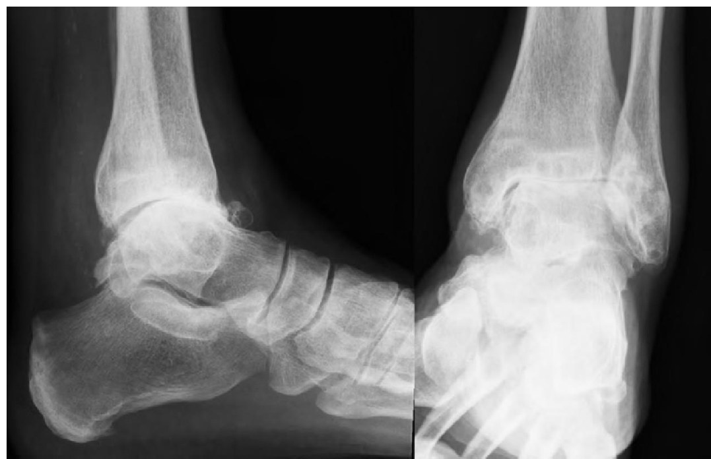
Post-traumatic ankle arthritis: no joint space, sclerosis, osteophytes. From the deck.Built from the three “Fracture Management & Complications” decks, the three recordings and the module's knowledge checks. Surgical, wound, external-fixator and fasciotomy photographs are left out. Notes: the two speakers define nonunion differently (Dr. Kalia: no healing in 6–9 months, with “twice the expected time” as delayed union; Dr. Cassidy: no healing in twice the expected time), and there's no single agreed definition. The FDA definition often quoted is at least 9 months since injury with no visible progress for 3 months. The compartment syndrome slide pairs dorsiflexion with the anterior compartment and plantarflexion with the posterior; Dr. Cassidy says on the recording that this is backwards, and the page follows her.